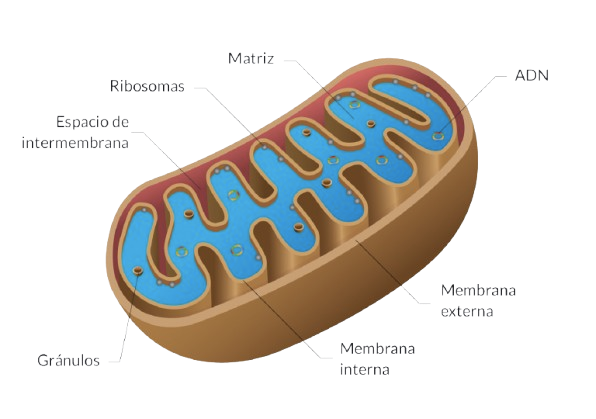

Núcleo
El núcleo es la región de la célula donde se encuentra el material genético (ADN) de la célula animal. Se considera un orgánulo celular membranoso, es decir, tiene una envoltura similar a la membrana plasmática. La existencia de esta envoltura hace que el material genético se mantenga guardado en su interior.
Nucléolo
El nucléolo es una estructura celular que está presente en el núcleo de la célula animal. En cada núcleo generalmente solo existe un nucléolo. El nucléolo es uno de los orgánulos más importantes presentes en el núcleo de las células eucariotas. En el nucléolo de las células se producen los ARNs ribosómicos. Por lo tanto, la función más importante de estas estructuras es ayudar en la producción de ARN.

Membrana Plasmática
La membrana plasmática o membrana celular es una categoría de orgánulo celular. Se trata de una envoltura fina, porosa y microscópica. La membrana plasmática es una estructura semipermeable, responsable del transporte y la selección de sustancias que entran y salen de la célula. Por ello, es de extrema importancia para el metabolismo celular.
Citoplasma
El citoplasma es la región de la célula donde se encuentran el núcleo y los orgánulos, además de otras estructuras con funciones específicas. Está formado por una sustancia fluida compuesta principalmente por agua, proteínas, sales minerales, carbohidratos y orgánulos celulares. El citoplasma es esencial para mantener la célula viva, ya que crea un ambiente favorable donde ocurren las reacciones químicas, el transporte y el almacenamiento de sustancias importantes.
Ribosomas
Los ribosomas son pequeñas estructuras en forma de gránulos que están presentes en las células animales. La función de los ribosomas es ayudar en la producción y síntesis de proteínas en las células. Además de ellos, participan en este proceso las moléculas de ADN y ARN.

Retículo Endoplasmático
El retículo endoplasmático es un orgánulo membranoso relacionado con la producción de moléculas orgánicas. Existen 2 tipos de retículo: el liso y el rugoso, ambos tienen formas y funciones distintas. El rugoso tiene ribosomas en sus paredes externas y es responsable de la síntesis de proteínas, mientras que el liso se encarga de la producción de lípidos. Los retículos son estructuras membranosas compuestas de sacos aplanados ubicados en el citosol de la célula.
Complejo de Golgi
El Complejo de Golgi, o Aparato de Golgi, o Complejo Golgiense, es un orgánulo de células animales, compuesto por discos membranosos aplanados y apilados. Sus funciones son modificar, almacenar y exportar proteínas sintetizadas en el retículo endoplasmático rugoso y, además, da origen a los lisosomas y a los acrosomas de los espermatozoides.
Lisosomas
Los lisosomas son estructuras esféricas delimitadas por una membrana formada por una capa lipoproteica. Estos orgánulos contienen muchas enzimas que les permiten degradar un gran número de sustancias. Las enzimas son peptidasas (digieren aminoácidos), nucleasas (digieren ácidos nucleicos), lipasas (digieren lípidos), entre otras. Como estas enzimas hidrolasas funcionan en un ambiente ácido, la digestión ocurre dentro de los lisosomas para no dañar la célula.
Mitocondria
Su función es producir la mayor parte de la energía de las células, a través del proceso llamado respiración celular. El tamaño, la forma, la cantidad y la distribución de las mitocondrias varían según el tipo de célula. Además, poseen su propio material genético. Ahora, explicando qué es la respiración celular. La respiración celular es un proceso de oxidación de moléculas orgánicas, como ácidos grasos y glúcidos, en especial la glucosa, que es la principal fuente de energía utilizada por los organismos heterótrofos.
Centríolos
Se trata de un tipo de orgánulo citoplasmático que ejerce una función muy importante en las células animales. Los centríolos son estructuras celulares que ayudan en la división celular (mitosis y meiosis). Por lo tanto, tienen la capacidad de duplicarse durante el ciclo de la división celular, organizando el huso acromático. Después del proceso de duplicación, los centríolos migran hacia los polos de la célula. Además, ayudan en la formación de los cilios y los flagelos.

Peroxisomas
Los peroxisomas ejercen funciones importantes en el interior de las células, ya que presentan enzimas digestivas responsables de oxidar sustancias orgánicas. Los peroxisomas son pequeñas estructuras de forma redondeada que están envueltas por una membrana lipoproteica. En su interior contienen enzimas oxidasas, responsables de la oxidación de sustancias.
Vacuolas Digestivas
Estas vacuolas realizan la digestión intracelular y están presentes en protozoos y en células animales y humanas como los macrófagos. Dentro de la vacuola digestiva, las enzimas del lisosoma realizarán la digestión y luego los restos serán eliminados fuera de la célula. En las células de defensa del cuerpo humano ocurre una situación similar. Los agentes invasores, por ejemplo bacterias o virus, son fagocitados y digeridos dentro de las vacuolas digestivas.